普段、メインに使っているMTBの軸受けが完全に異音がして、ベアリングが死んでいる感じです。
メンテナンスする暇がなくて、やっと手入れすることにしました。1ヶ月ほど前からヤバイなやばいなーって思っていたのですが、やっとこさ。
ばらして、死んでいることが確認。左側が破壊されたということは、右足の脚力のほうが強かったということでしょうか。
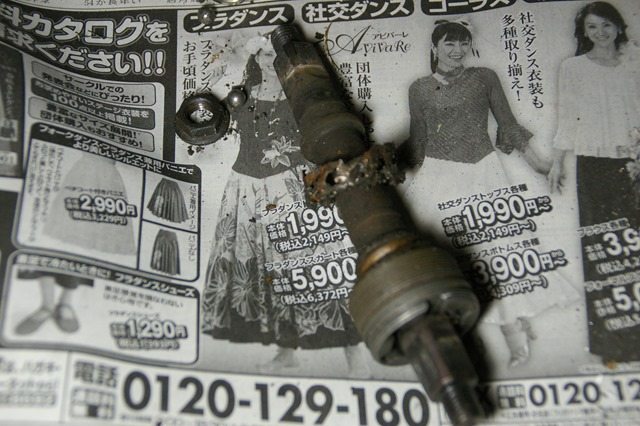
このタイプは（シャフトにベアリング入れてグリースを塗るタイプ）死ぬのが速いです。シャフトはまだ使えますが、ベアリングは２つとも交換しないと。
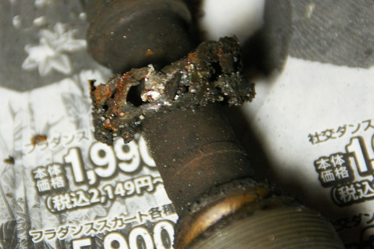
ベアリングなんですよ、これ。
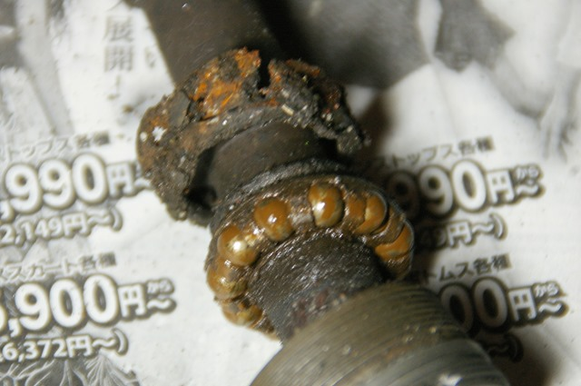
反対側のベアリングはかろうじて形をとどめています。雨の日も載るので、どうしてもメンテナンスしないとこうなります。2016年９月の半年前にばらした（シャフトが信じられないことに折れたので）んですが、もうこんな状態です。
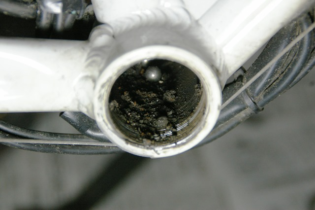
このタイプは、シールドが甘いので土ぼこりが進入しているようです。無残な軸受け。このシャフトタイプはお蔵入りにすることに。
スペアのMTBの軸受けは、Mid Drive のモーターを付ける予定で、そのボトムブラケットをこの白いMTBにつけることにしました。 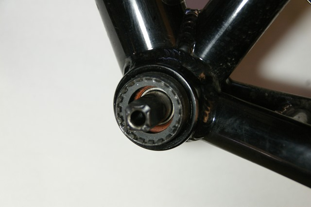
このMTBは、10年以上前に買ってからノーメンテナンスです。BB（ボトムブラケット）の専用工具ではずします。クランクをはずすのも専用工具が必要です。まぁ、どちらも安いものなので持っているとメンテが楽しいです。自転車屋さんに頼みたくないメンテナンス好きの方にはお勧めです。
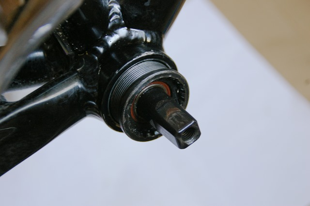
ギヤが付いているほうは、逆ネジです。
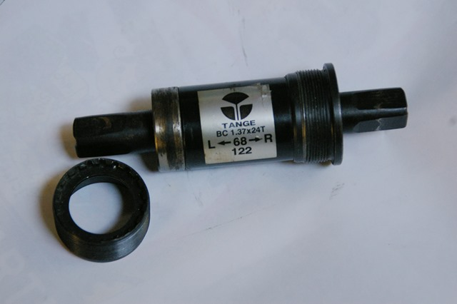
10年以上頑張っていた、BBは、株式会社タンゲセイキのものでした。すばらしい。たぶん走行距離は2万キロ以上はいっています。雨風雪の中、正確には、15年以上頑張ってくれていました。サイズは、シャフト間122mm のもの。
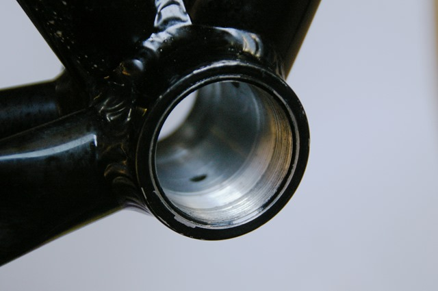
中は綺麗なものです。
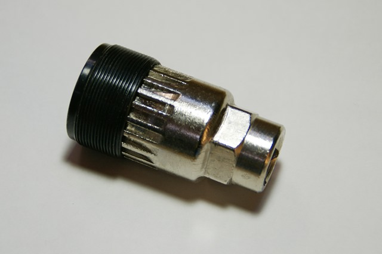
こういう専用工具ではずします。また、そのうち暇があれば自転車工具の紹介などもしたいですね。今回は、まだ作業中であれこれ忙しいので。自分が持っている工具は、あんまり精度が良くなくて、１つ買うなら、以下のシマノのように背が低いのが良いです。かみ合わせが浅いので、高さがないほうがはずしやすいです。この浅いソケットに柄がついたタイプもあり、自転車屋さんなどはそういうのを使っているところが多いようです。
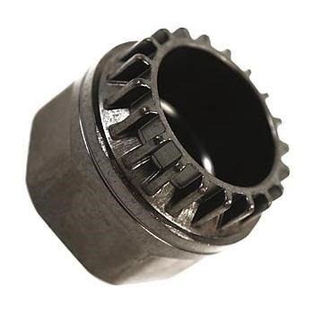
で、タンゲのBBにはもう少し頑張ってもらうことに。白いMTBにこれを付けます。ギヤから逆ネジで、ねじ込みます。
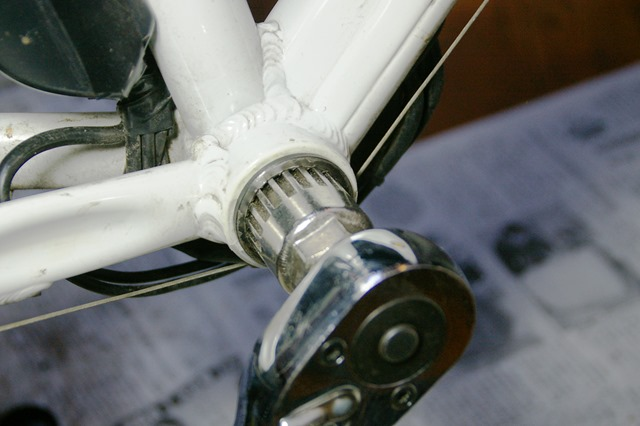
反対側、こんな感じ。これゴム（樹脂）シールドが付いているから、雨風に強いんですね。
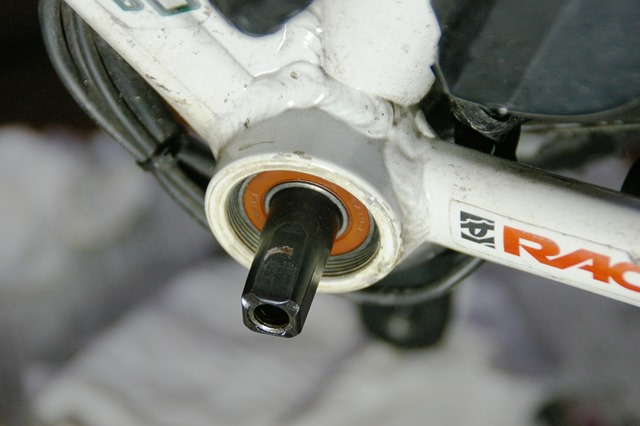
手ではまるところまでねじ込みます。こっちは、普通のネジ方向。
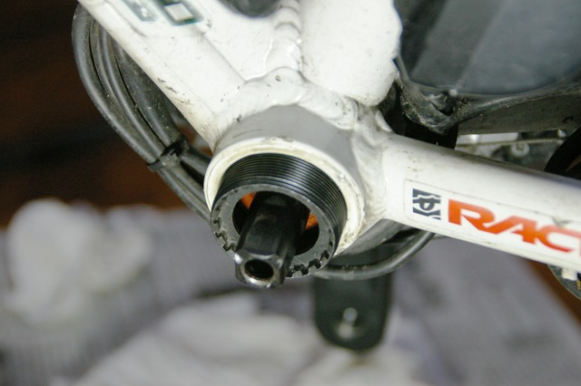
これでOKです。トルクレンチがあれば規定トルクで締めます。
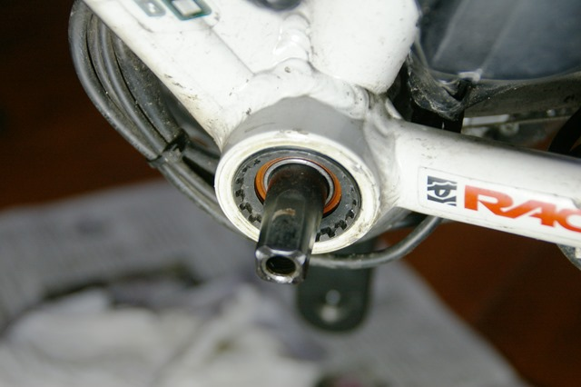
クランクとギヤも、黒いMTBから移植。
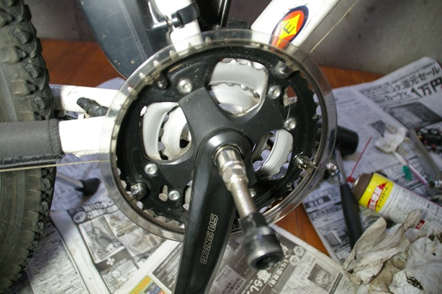
ついでに、チェーンも掃除することに。
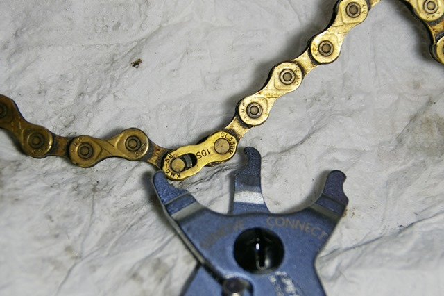
このMTBには、KMC のゴールドタイプのチェーンを使っています。ミッシングリンクという連結のコマをつけてあるのでこういう工具で簡単に外れます。ピンを抜かなくていいんどえ掃除が楽です。工具も、チェーンもアリエク経由の品です。このチェーンは、6000km 載っていますが、結構丈夫です。まだ問題なく使えそうです。お勧め。KMC 9スピード ゴールド
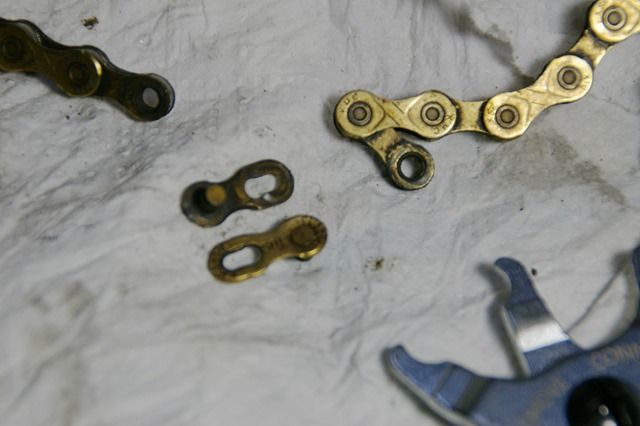
結構汚れていますね。いろいろな掃除の仕方がありますが、自分はこんな感じで、廃Tシャツの上に巻いて歯ブラシとCRC556 を使って掃除しています。
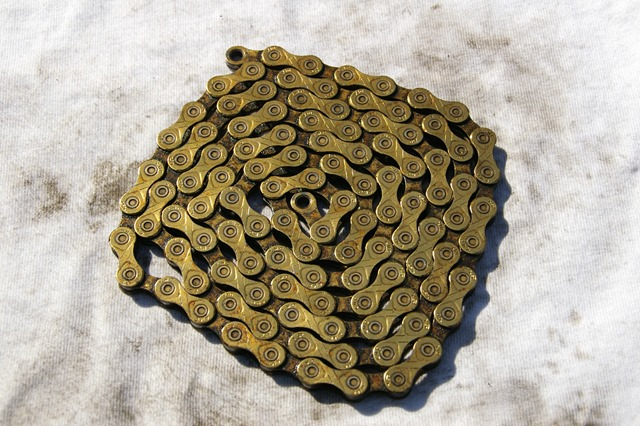
掃除前のアップ。
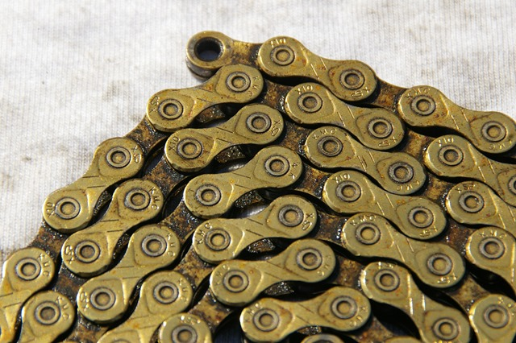
掃除したあとのアップ。
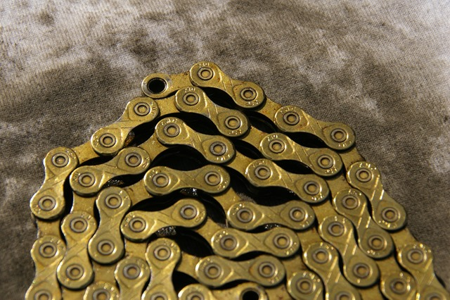
汚れがひどいときは、ブレーキクリーナーで落としてからやっています。２，３ヶ月ｎ1回やる感じですが、今回サボっていて半年振りです。
1000円くらいのチェーンだと、1年、6000km は持たないので、結局少し高めのチェーンをこまめに掃除したほうがお得という結論になっています。
チェーンオイルは、専用のものがありますが、結局、自分は CRC556 をこまめにふりかけ、外側から汚れとともにふき取っているメンテナンスです。こうやって、はずしてブラシで掃除するのは3ヶ月に一回くらいです。粘土があるチェーンオイルだと、汚れが付きまくって、結局掃除が大変なので、このスタイルに落ち着いています。
その後、タイヤローテーションして試運転しましたがタンゲのBBはまだいけるようです。もう少しがんばってもらいましょう。シールドタイプのBBは丈夫ですね。
スポークも締めなおして、油圧ディスクブレーキの調整をしてメンテナンス終了。立ったり中腰だったりで、つかれました。
あと、フロントフォークを替えたいんですよね。フロント周りはメンテナンスしたことがないので、どうやって交換するのかやってみたいです。